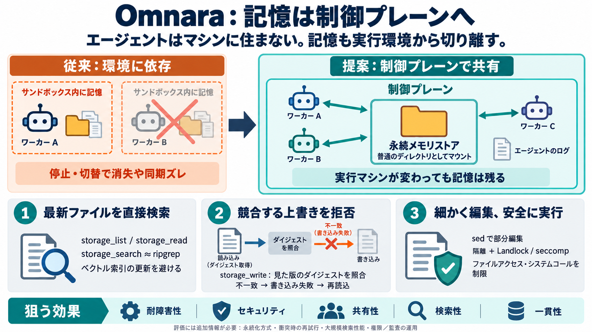

Omnara - 2026 Company Profile, Team & Competitors - Tracxn
| 4419th | Logo for Omnara Omnara 2020, San Francisco (United States), Unfunded | Provider of a unified platform for r…

記憶は「場所」問題
エージェントの「記憶（メモリ）」は、サンドボックスや特定マシンではなく制御プレーン側のファイルシステムとして扱うべきだ、というのが Omnara の設計主張です。
サンドボックス依存
従来のマネージドエージェントは、サンドボックス（仮想環境）に記憶や作業データを置きがちですが、環境の切替・停止・消失で一貫性が崩れます。
住まない前提
Omnara ではエージェントはどのマシンにも「住まない」ため、記憶も同じ発想で「どのマシンにも依存しない場所」に置く必要があります。
ワーカーは作業者
エージェントのログと同じ制御プレーンに、メモリ用ディレクトリ（メモリストア）をマウントし、すべてのワーカーが直接読み書きできるようにします。
grep感覚
シェルを開けない状況でも、ワーカー側が ripgrep 相当を実行し、検索体験を grep に近づけます。
storage_search → ripgrep 実行（例: -i, -C などのオプション対応）
ベクトル検索ではない
埋め込み更新のコストを避け、最新ファイルに対してその場で検索できる設計を選びます（= ベクトル検索型の別コスト構造を回避）。
衝突は拒否
複数エージェントが同じファイルを編集する際、制御プレーンが「見た版（ダイジェスト）」を追跡し、一致しなければ上書きせず衝突として失敗させます。
編集を細かく
ファイル丸ごとの置換より効率的にするため、sed スクリプトによる部分編集をサポートします。
sedの悪用対策
sed は小さな言語であり悪用の余地があるため、仮想的な軽量ジャイルとカーネル制限（Landlock / seccomp）を併用してリスクを抑えます。
設計の効きどころ
この設計は、レジリエンス・セキュリティ・共有性・検索性・一貫性を同時に狙います。
判断に必要な論点
本文だけでは、性能・運用・可観測性の評価に必要な情報がまだ不足しています。
一文まとめ
Omnara は「エージェントが住まない」前提から逆算し、記憶を制御プレーンのマウントディレクトリとして提供することで、消える記憶・衝突・同期ズレを構造的に抑える設計です。
| 4419th | Logo for Omnara Omnara 2020, San Francisco (United States), Unfunded | Provider of a unified platform for r…
Developer of an artificial intelligence agent management platform designed to turn passive monitoring into active collab…
OMNARA INDIA PRIVATE LIMITED is a Private Limited Company and was incorporated on Apr 13, 2026 in India. Its registered …
Home›Companies›Omnara Omnara The Open-Source Alternative to Claude Managed Agents Summer 2025 Active Developer Tool…
Title: Omnara (YC S25) Information Monitor, manage, and collaborate with your entire fleet of AI agents from a single, u…